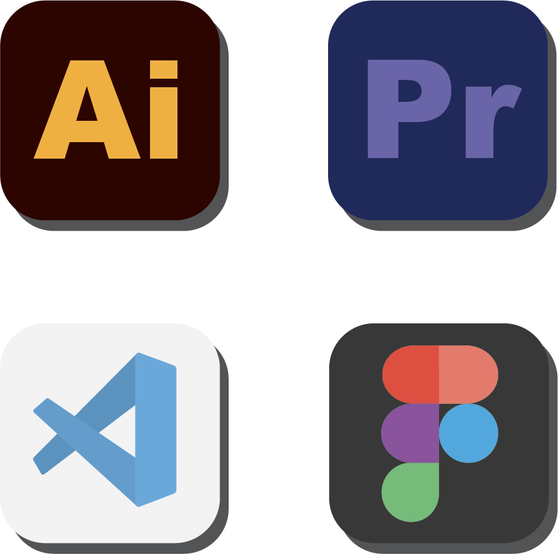
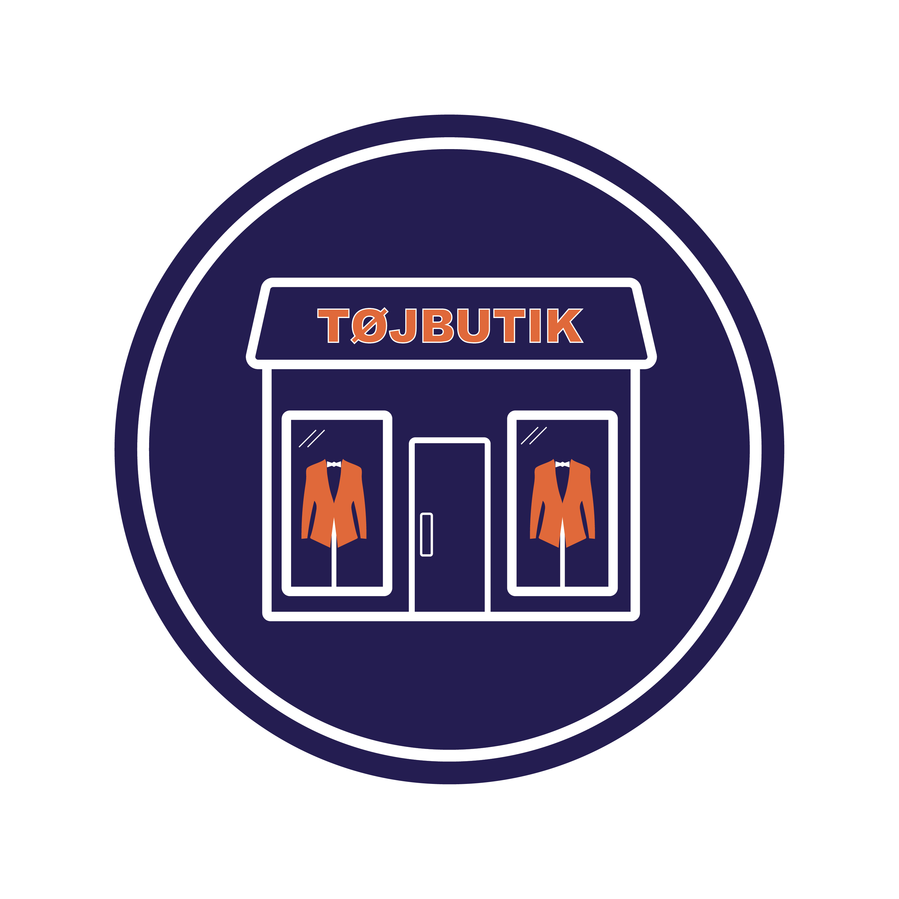

SOFTWARE
Jeg er en kreativ sjæl med kompetencer inden for digital produktion og design.
Min primære værktøjskasse inkluderer Premiere Pro til videoredigering, Illustrator til grafisk
design,
Figma til
prototyper og VS Code til kodning.
Gennem min erfaring med disse apps har jeg udviklet en alsidig og teknisk kompetence, der gør mig i
stand til at
håndtere forskellige aspekter af kreativ produktion, fra visuel æstetik til kodning.


UDDANNET SALGSASSISTENT
Jeg har stået i tøjbutik i lidt over 6 år i fire forskellige butikker.
I 2016 tog jeg springet ind i handelsverdenen ved at starte på handelsskolen i Knord Lyngby. Et år
senere blev jeg elev
i Kaufmann, hvor jeg lærte en masse om handel og salgsteknikker.
Efter det første år i Kaufmann tog
jeg endnu et
skridt og kastede mig også ud i qUINT-eventyret.
Denne vej har virkelig udviklet mine færdigheder
og givet mig en
solid forståelse for salg, handel og ikke mindst forståelse for menneskets behov.
Kaufmann • 2017 - 2018
qUINT • 2018 - 2019
Mr. Møllbach • 2019 - 2020
Butik Frederik • 2020 - 2023
TOP 3 TING
⟝⦁⦿⦁⟞
HOBBYER

BADMINTON
Jeg er stortset lige begyndt at spille
badminton igen efter 16 års pause..
Det sgu ret sjovt lige at komme ud
en gang om ugen, så jeg kan få lidt ondt i skuldren dagen efter..
⦁⦿⦁

MADLAVNING
Det har altid intereseret mig at lave mad. Især det
med at lave mad til andre.
Følesen af at blande en masse forskellige ingredienser og krydderier sammen,
og skabe en større enhed der smager skide godt.
Butterchicken er min go to ret. Den er utrolig nem at lave og det smager fantastisk.
⦁⦿⦁

FODBOLD
Fodbold er min langvarige passion, uanset om det på PlayStation, selv på banen
eller ved at se en live kamp.
Fodbold har både givet glæde og lykkefølelse, men også knap så glade dage.
Det er mere end bare en sport -
det er en kilde til personlig tilfredsstillelse og fællesskab, der har lært mig vigtige
livslektioner.